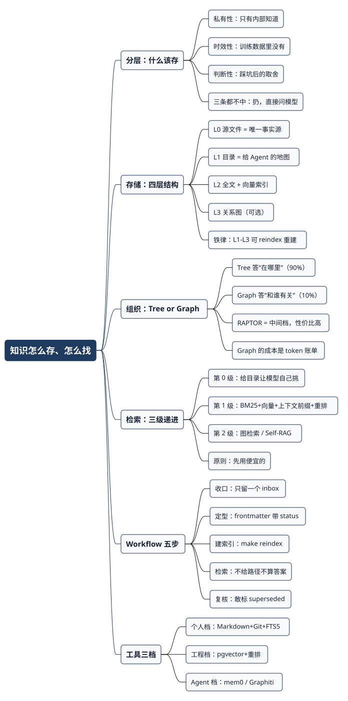

AI 时代知识到底怎么存、怎么找：一个后端工程师的知识库工作流
Posted on 一 31 8月 2026 in AI
| Abstract | AI 时代知识到底怎么存、怎么找：一个后端工程师的知识库工作流 |
|---|---|
| Authors | Walter Fan |
| Category | learning note |
| Version | v1.0 |
| Updated | 2026-08-31 |
| License | CC-BY-NC-ND 4.0 |
大纲
展开看看
- 先分层：AI 知道的别存，AI 不知道的才是你的资产，三条判据
- 怎么存：四层结构，只有源文件是事实源，索引全部可重建
- 怎么组织：Tree 做骨架，Graph 做补充，别一上来就建图
- 怎么检索：目录 → 混合检索 → 图检索，三级递进，先便宜的
- 一套能跑的 workflow：五步 + 目录结构 + frontmatter + reindex 脚本
- 工具选型：个人档 / 工程档 / Agent 档
- 论文清单：8 篇，每篇一句“什么时候用它”
前几天我在自己的博客仓库里敲了几个命令：
$ find content -name "*.md" | wc -l
611
$ find doc/source -name "*.md" -o -name "*.rst" | wc -l
791
十来年攒下来的东西，一千四百多个文件。然后我问 AI：“我以前是怎么讲鉴权设计的？”它给我讲了一通 OAuth 2.0 的标准流程——正确，通用，而且跟我写过的东西一点关系都没有。
存了，等于没存。 这才是 AI 时代知识管理的真问题：不是你攒得不够多，是你攒的那些东西，模型进不去，你自己也想不起来。
这篇文章我想说清一件事：知识库不是一个数据库，是一条“分层—存储—组织—检索”的流水线，而这条线上最关键的判断在最前面——决定什么不该存。 文末给一套我自己在用的工作流，目录结构、元数据规范、重建脚本都能直接抄。
一、先分层：AI 知道的别存，AI 不知道的才是资产
“AI 都知道了，我还要不要学、要不要存？”这个问题得拆成两个。
要不要学？要。 你得有判断力去审 AI 的输出，判断力来自你脑子里的模型，不来自你硬盘上的文件。这事没有捷径。
要不要存进知识库？大部分不要。 把《设计模式》抄一遍进你的向量库，除了让检索结果里多几条噪音，没有任何收益——模型的参数里比你抄得全。我自己踩过这个坑：早年拿 pgvector 搭库的时候什么都往里灌，结果 top-k 里挤满了从公开文档抄来的通用说明，把我自己写的那几条压下去了。向量库里的每一条无用记录，都在稀释有用记录的胜率。
判断一条知识该不该进你的库，我用三条判据，命中任意一条就存：
| 判据 | 问自己 | 例子 |
|---|---|---|
| 私有性 | 这事只有我/我们内部知道吗？ | 你家服务的重试策略为什么设成 3 次、哪个客户不能推 Java 方案 |
| 时效性 | 模型的训练数据里有这个版本吗？ | 上周刚定的接口契约、今年换的部署流程、新出的库的坑 |
| 判断性 | 这是我踩过坑之后的取舍，而不是标准答案吗？ | “这个场景我们最后没用消息队列，因为运维成本压不住” |
三条都不命中的，直接扔——需要的时候问模型，比你自己检索还快。
反过来说，命中的那些才是你真正的护城河，而它们的共同点是：AI 不可能知道。所以“怎么让 AI 检索到我知道的东西”，本质上就是把这三类知识变成模型能读、能引、能核对的形态。
二、怎么存：四层结构，只有一层是事实源
我见过太多知识库死在同一个地方：把索引当成了事实源。 全塞进 Notion，全灌进向量库，或者全丢给某个 SaaS。等到工具改版、涨价、公司禁用，或者你只是想换个 embedding 模型，你才发现——你的知识跟那个工具长在一起了，拔不出来。
我现在坚持一条：
源文件是唯一事实源，索引全部是可以扔掉重建的缓存。 判断标准很硬：删掉除源文件以外的所有东西，一条命令能不能全部长回来？不能，就说明你被工具绑架了。
按这条原则，知识库分四层：
flowchart TD
subgraph L0["L0 源文件层（唯一事实源）"]
A["Git + Markdown/纯文本<br/>带 frontmatter 元数据"]
end
subgraph L1["L1 目录层（给 Agent 的地图）"]
B["index.json / AGENTS.md<br/>标题+摘要+路径，几十 KB"]
end
subgraph L2["L2 检索层（可重建）"]
C["全文索引 FTS5/BM25"]
D["向量索引 pgvector/Qdrant"]
end
subgraph L3["L3 关系层（可选，可重建）"]
E["实体-关系图<br/>解决跨文档的问题"]
end
A --> B
A --> C
A --> D
C --> E
D --> E
B -.->|make reindex 全部重建| A
四层各管一件事：
- L0 源文件层：Git 管的 Markdown。为什么是 Markdown + Git 而不是数据库？因为它同时满足四件事——人能直接读、
grep能搜、模型能原样吃、git log自带时间维度。这四件事任何一个数据库方案都做不齐。 - L1 目录层：一份薄薄的清单，只有标题、一句摘要、文件路径。这一层的价值被严重低估了。 一千多篇文档的目录压到几十 KB，可以整份塞进上下文；模型看完目录自己决定去读哪几篇，比你先做一次向量检索再把 chunk 拼给它，既准又便宜。这就是渐进式披露，我在另一篇里专门写过。
- L2 检索层：全文索引 + 向量索引。两个都要，不是二选一——下一节细说。
- L3 关系层：只在需要回答“A 和 B 是什么关系”“这个模块被谁依赖”这类跨文档问题时才建。
关键是那条虚线：L1、L2、L3 都能从 L0 重建。 Makefile 里就一个 reindex 目标，索引删干净重跑一遍就长回来。这条性质带来的自由度很实在：想换 embedding 模型？重跑。想从 SQLite 换到 pgvector？重跑。想试试图检索？重跑。你的知识不跟任何一个工具绑死。
三、怎么组织：Tree 做骨架，Graph 做补充
这是被问得最多的问题，也是最容易走弯路的地方。我的答案不中立：先把 Tree 做扎实，Graph 等到 Tree 明显不够用了再上。
理由很朴素：Tree 是你能维护的，Graph 是你维护不动的。
Tree（目录 + 标签 + 层级摘要）的成本是线性的：加一篇文档，放进一个目录，打几个标签，完事。Graph 的成本是另一个量级——你得抽实体、抽关系、做消歧、处理更新。这活儿现在基本靠 LLM 干，而 LLM 干这活儿要烧 token。微软的 GraphRAG 论文里，一个 100 万 token 左右的语料要抽出 8000 多个实体、2 万多条关系边（arXiv:2404.16130），你可以自己算算你那份文档要多少钱，以及每次文档更新要不要重来一遍——这也正是 LightRAG 那篇论文要解决的问题，我精读过。
什么时候 Tree 真的不够用？看这张表：
| 你的问题长什么样 | 该用什么 | 为什么 |
|---|---|---|
| “鉴权那篇文档在哪” | Tree + 全文检索 | 答案在单篇文档里，找到就行 |
| “这段代码为什么这么写” | Tree + 向量检索 | 语义匹配，答案还是在单篇 |
| “这个改动会影响哪些服务” | Graph | 答案在关系里，没有任何单篇文档写着它 |
| “这三年我对微服务的看法怎么变的” | Graph（带时间） | 需要沿时间轴串起多篇 |
| “这份文档整体讲了什么主题” | 层级摘要（RAPTOR 式） | 答案在“全局”，任何一个 chunk 里都没有 |
最后一行值得单独说。RAPTOR（arXiv:2401.18059，ICLR 2024）的做法很聪明也很省：不建图，只是把 chunk 递归地聚类、摘要，向上长成一棵树，检索时可以从不同抽象层次取材。这是 Tree 和 Graph 之间的中间档——成本接近 Tree，却能回答一部分“全局性”问题。个人知识库我优先推这一档。
一句话记住：
Tree 回答“在哪里”，Graph 回答“和谁有关”。 你 90% 的检索是前者。别为了 10% 的场景，先把 90% 的维护成本抬上去。
四、怎么检索：三级递进，永远先用便宜的
RAG 到底该怎么做？先说一个反直觉的结论：大多数 RAG 效果差，不是因为检索算法不行，是因为一上来就用了最贵的那一档。
我把检索排成三级，从便宜到贵，能在上一级解决就绝不往下走：
第 0 级：给目录，让模型自己挑（最便宜，也最被忽视）
把 L1 那份几十 KB 的目录扔给模型，它自己说“我要读第 37 和第 112 篇”，然后你把这两个文件原样给它。
这一级的好处大到不合理：没有 chunk，就没有 chunk 切坏的问题；给的是整篇原文，就没有上下文被截断的问题；模型是自己选的，就没有“检索结果不相关”的问题。 对于几百到几千篇文档的个人知识库，这一级能解决大部分问题，而且一分钱 embedding 都不用花。
什么时候不够用？文档涨到几万篇，目录本身塞不进上下文了。那时候再往下走。
第 1 级：混合检索 + 重排（工程主力）
这一级是绝大多数生产系统该待的地方，三件事：
① BM25 和向量，两个都要。 向量擅长“意思相近”，BM25 擅长“词一模一样”。你搜一个错误码 ERR_CERT_AUTHORITY_INVALID，向量检索大概会给你一堆“证书相关的文章”，BM25 直接把那一篇精确命中。这两个能力不重叠。具体怎么在 Elasticsearch 里做混合检索，我写过一篇实操。
② chunk 前先把上下文补回去。 这是我认为性价比最高的一招。原始 chunk 常常是这样的：
公司营收比上一季度增长了 3%。
哪个公司？哪一年？这个 chunk 单独拎出来毫无检索价值。Anthropic 的做法（Contextual Retrieval，2024-09）是在 embedding 之前，用 LLM 给每个 chunk 加 50-100 token 的上下文前缀：
本段出自 ACME 公司 2023 年 Q2 财报，上一季度营收为 3.14 亿美元。
公司营收比上一季度增长了 3%。
他们公开的数字：top-20 检索失败率从 5.7% 降到 3.7%（只加上下文嵌入），加上 contextual BM25 降到 2.9%，再加重排降到 1.9%。同一件事另有一条更省的路子——late chunking（arXiv:2409.04701）：先用长上下文模型把整篇过一遍拿到 token 向量，再切分做池化。 不需要给每个 chunk 单独调一次 LLM，成本低得多。
③ 必须有重排。 检索捞 20 条，重排选 3-5 条塞进上下文。这一步几乎是免费的准确率提升——上面那组数字里，最后 2.9% → 1.9% 就是重排贡献的。
第 2 级：图检索 / 自反思检索（按需）
到这一级才考虑：GraphRAG、LightRAG 那类图检索，处理跨文档关系；Self-RAG（arXiv:2310.11511）那类让模型自己判断“这次到底要不要检索、捞回来的东西相不相关”的做法，处理“检索反而添乱”的场景。
Self-RAG 那个洞察值得记住：不是每个问题都需要检索。 问“帮我改个变量名”还去查一遍知识库，纯属浪费。
三级放一起，就一句话：
从目录到混合检索到图检索，每往下一级，成本涨一个量级，覆盖的问题类型窄一个量级。 大多数人跳过了第 0 级，直接在第 1 级和第 2 级之间纠结——那是本末倒置。
五、一套能跑的 workflow：五步，可以直接抄
这套我自己在跑，后端工程师照抄门槛不高。
目录结构
knowledge/
├── inbox/ # 唯一入口，未加工的原始素材
├── notes/ # L0 事实源：加工过的知识卡片
│ ├── decision/ # 决策与取舍（判断性知识）
│ ├── runbook/ # 操作手册（时效性知识）
│ ├── domain/ # 业务与领域知识（私有性知识）
│ └── reading/ # 读书/论文笔记
├── index/ # L1-L3，全部可重建，不进 Git
│ ├── catalog.json # L1 目录
│ └── kb.db # L2 SQLite FTS5 + 向量
├── AGENTS.md # 给 AI 看的入口：这个库怎么用
└── Makefile # make reindex
notes/ 下面的四个子目录不是随便分的——正好对应第一节那三条判据（decision=判断性，runbook=时效性，domain=私有性，reading 是原料）。分类和“该不该存”的判断用同一套标准，你就不会往里塞垃圾。
五步
1. 收口：只留一个入口
所有素材先进 inbox/，不管来自 Slack、邮件、会议记录还是随手记。入口多是知识库死掉的第一原因——你在三个地方各存一半，最后三个都不敢信。
2. 定型：写成带元数据的卡片
从 inbox 出来的东西必须落成一张卡片，frontmatter 是硬要求：
---
title: 为什么我们的重试上限定在 3 次
type: decision # decision | runbook | domain | reading
status: current # current | superseded | draft
tags: [reliability, retry, backend]
source: 2026-08 架构评审
supersedes: [] # 被这篇取代的旧卡片
related: [notes/decision/circuit-breaker-threshold.md]
updated: 2026-08-20
---
三个字段是我踩坑换来的，别省：
status：知识库真正的杀手不是内容少，是过期内容和现行内容混在一起，而检索分不出来。有了status，检索时可以直接过滤掉superseded。supersedes：留下演进链条。“我们以前是怎么想的、后来为什么改”——这条链本身就是最值钱的知识，而且是模型绝对不可能知道的。updated：检索排序里给新内容加权。
3. 建索引：一条命令重建全部
reindex:
python3 scripts/build_catalog.py # L0 -> L1 目录
python3 scripts/build_fts.py # L0 -> BM25 全文索引
python3 scripts/build_vectors.py # L0 -> 向量索引（带上下文前缀）
build_vectors.py 的核心就三件事，伪代码：
for note in load_notes("notes/**/*.md"):
if note.meta["status"] == "superseded":
continue # 过期的不进索引
for chunk in split_by_heading(note.body):
# 关键：把上下文补回去再 embed（Contextual Retrieval 的思路）
text = f"[{note.meta['title']} / {chunk.heading}] {chunk.text}"
upsert(
embedding=embed(text),
content=chunk.text,
path=note.path, # 必须存路径，检索完能回原文
meta=note.meta,
)
path 那一行别省。检索的产出不该是一段文本，该是一个能回去核对的位置。
4. 检索：按第四节的三级走
在 AGENTS.md 里把规则写给模型，让它自己按级别选：
## 怎么查这个知识库
1. 先读 `index/catalog.json`（目录）。能定位到具体文件，就直接读原文，别检索。
2. 定位不到，用 `kb_search` 工具做混合检索，只取重排后 top-3。
3. 涉及“哪些模块受影响”“观点怎么演进”这类跨文档问题，用 `kb_graph`。
4. 引用任何结论，必须给出 `notes/` 下的文件路径。
最后一条是硬约束：不给路径的答案不算答案。 这一条能挡掉大部分幻觉。
5. 复核：定期清理，而不是只管往里加
每月十几分钟：翻一遍 status: current 里 updated 超过一年的卡片，该标 superseded 的标掉。知识库的维护成本主要不在写入，在于承认某些东西已经过期了。
六、工具选型：三档，按你实际的规模选
我把工具分三档，绝大多数人该待在第一档，却总想着第三档。
| 档位 | 适用规模 | 存储 | 检索 | 什么时候升级 |
|---|---|---|---|---|
| 个人档 | 几百到几千篇 | Markdown + Git | ripgrep + SQLite FTS5 + 目录塞上下文 |
目录塞不进上下文了 |
| 工程档 | 上万篇 / 团队共享 | Postgres + pgvector（或 Qdrant） | 混合检索 + 重排 + 上下文前缀 | 出现大量跨文档关系问题 |
| Agent 档 | 给 Agent 用的动态记忆 | mem0 / Graphiti | 多信号检索 + 时序图 | 需要跨会话记住用户和项目状态 |
几点私货：
- 个人档别上向量库。 我自己就是从这个坑里爬出来的——手搓 pgvector 那套（写过）技术上跑得通，但对一千多篇文档的个人库来说，
ripgrep加一份目录的效果并不比它差，维护成本却是零。 - 工程档优先 pgvector，别急着上专用向量库。 你已经有 Postgres 了，向量、元数据、全文索引在同一个库里，一条 SQL 能同时按
status过滤、按updated加权、按向量排序。跨两个系统做这件事，痛苦程度翻倍。等到规模真的压不住，再换 Qdrant / Milvus。 - 不想自己搭的，看 RAGFlow。 它的卖点是文档解析（PDF、表格、扫描件）做得比自己写强不少——这恰好是自建方案里最脏最累的一块。
- Agent 记忆是另一个问题，别混进来。 个人知识库的知识是相对静态、你主动维护的；Agent 记忆是动态生成、需要打分和遗忘的。我为这事单独写过三篇（手搓 / 多工具共享 / mem0），结论是：要现成的就直接上 mem0，别自己写第二遍。 需要“什么时候知道的、什么时候变的”这种时间维度，看 Zep/Graphiti（arXiv:2501.13956）。
七、值得读的论文：8 篇，每篇一句“什么时候用它”
按用途分三组，都是能直接指导工程决策的，不是纯刷榜的。
起点（理解 RAG 到底在干什么）
- RAG 原始论文 — Lewis et al., arXiv:2005.11401，NeurIPS 2020。想清楚“参数化记忆 vs 非参数化记忆”这个分野的时候读——这正好对应第一节那个“什么该存、什么不该存”的判断。
- ColBERT — Khattab & Zaharia, arXiv:2004.12832，SIGIR 2020。当你发现“一个向量表示整个 chunk”丢的信息太多时读。late interaction 的思路是现在多向量检索的源头。
检索技巧（能直接换成代码的）
- HyDE — Gao et al., arXiv:2212.10496。用户的问题太短、和文档措辞对不上时读：先让模型生成一篇“假想答案”，拿它去检索。改动小，效果立竿见影。
- Late Chunking — Günther et al., arXiv:2409.04701。想要 Contextual Retrieval 的效果，但不想给每个 chunk 都调一次 LLM 的时候读。
- Self-RAG — Asai et al., arXiv:2310.11511。当你发现“检索反而让答案变差”的时候读——它教模型自己判断要不要检索、捞回来的东西靠不靠谱。
组织结构（Tree vs Graph 的取舍）
- RAPTOR — Sarthi et al., arXiv:2401.18059，ICLR 2024。需要回答“这份文档整体讲了什么”但不想建图的时候读。个人知识库的性价比之王。
- GraphRAG — Edge et al., arXiv:2404.16130。确定自己有跨文档关系问题、并且算得清 token 账的时候读。顺便看它公布的实体/边数量，那就是账单。
- LightRAG — arXiv:2410.05779。觉得 GraphRAG 贵、尤其受不了“更新一次要重建”的时候读。我精读过。
顺带一句：Anthropic 的 Contextual Retrieval 那篇工程博客虽然不是论文，但对工程落地的直接价值超过上面一半。 有具体数字、有代码、有成本分析。
总结：源文件是资产，索引只是缓存
回到开头那个问题。我的库里有一千四百多个文件，AI 答不上来我怎么讲鉴权——问题不在文件太少，在于这些文件从来没被组织成“可被检索”的形态：没有统一的元数据，没有目录，过期的和现行的混在一起，也没有任何东西告诉模型该去哪儿找。
这篇讲的四件事，其实是一条链：
- 分层 — 私有性、时效性、判断性，三条判据，不命中的别存。存得少，检索才准。
- 存储 — 源文件是唯一事实源，索引全部可以
make reindex重建。判断标准是“删掉索引能不能长回来”。 - 组织 — Tree 回答“在哪里”，Graph 回答“和谁有关”，你 90% 的问题是前者。中间还有 RAPTOR 那一档。
- 检索 — 目录 → 混合检索 → 图检索，先用便宜的，第 0 级被绝大多数人跳过了。
要是只让我留一条，就留这个：
能被一条命令重建的东西，不值得你操心；不能被重建的东西，才是你的知识库。
今天就能做的四件事
- 在你现有的笔记里挑 10 条最有价值的，按
decision / runbook / domain归个类。不够 10 条的，说明前面存的东西大部分该扔。 - 给这 10 条加上 frontmatter，
status和updated两个字段必须有。 - 写个二十行的脚本生成
catalog.json，只要标题、摘要、路径。 - 把这份目录喂给你的 AI 工具，问一个具体的、只有你知道答案的问题。这一步就是你知识库的验收测试。
第 4 步答不上来，别急着上向量库——先回去看第 1 步。
全文思维导图
@startmindmap
<style>
mindmapDiagram {
node {
BackgroundColor #F8F9FA
LineColor #64748B
FontColor #172033
RoundCorner 10
Padding 10
FontSize 13
}
:depth(0) {
BackgroundColor #1E3A5F
LineColor #1E3A5F
FontColor white
FontSize 18
FontStyle bold
}
:depth(1) {
FontSize 15
FontStyle bold
}
:depth(2) {
FontSize 13
}
}
</style>
* 知识怎么存、怎么找
** 分层：什么该存
*** 私有性：只有内部知道
*** 时效性：训练数据里没有
*** 判断性：踩坑后的取舍
*** 三条都不中：扔，直接问模型
** 存储：四层结构
*** L0 源文件 = 唯一事实源
*** L1 目录 = 给 Agent 的地图
*** L2 全文 + 向量索引
*** L3 关系图（可选）
*** 铁律：L1-L3 可 reindex 重建
** 组织：Tree or Graph
*** Tree 答“在哪里”（90%）
*** Graph 答“和谁有关”（10%）
*** RAPTOR = 中间档，性价比高
*** Graph 的成本是 token 账单
** 检索：三级递进
*** 第 0 级：给目录让模型自己挑
*** 第 1 级：BM25+向量+上下文前缀+重排
*** 第 2 级：图检索 / Self-RAG
*** 原则：先用便宜的
** Workflow 五步
*** 收口：只留一个 inbox
*** 定型：frontmatter 带 status
*** 建索引：make reindex
*** 检索：不给路径不算答案
*** 复核：敢标 superseded
** 工具三档
*** 个人档：Markdown+Git+FTS5
*** 工程档：pgvector+重排
*** Agent 档：mem0 / Graphiti
@endmindmap

本作品采用知识共享署名-非商业性使用-禁止演绎 4.0 国际许可协议进行许可。 欢迎在我的个人网站 https://www.fanyamin.com 访问原文并评论。